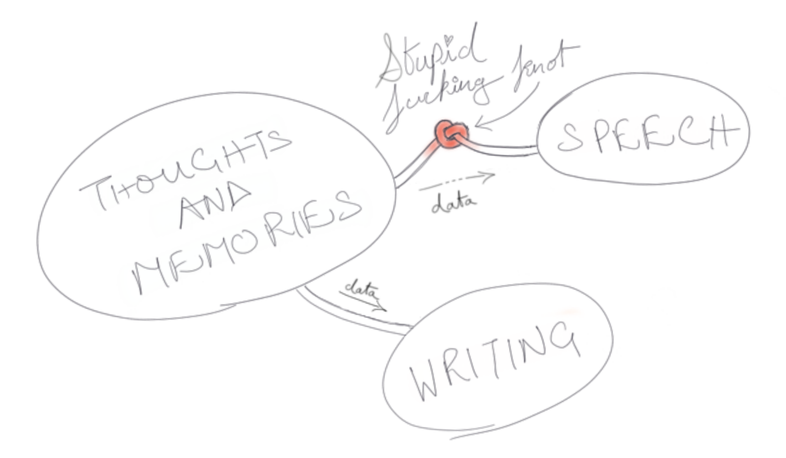

Please excuse the self-indulgence. I have been around for quite a while now, but all this time I've spent being around, it felt like there's been something cramping my expression. As though I've been interfacing with the world through a knotted hose, only a trickle of what I meant to express ever got through.
This is an imperfect analogy cause even the trickle that gets through is often misunderstood. So here's a napkin sketch to explain better:
There really is no one to blame for this mysterious malady of . From the time I was very young, my entire being has vehemently opposed interactions.
I remember when I joined college it took me a good 6 months to speak to another student (my stolid exterior did nothing to help me). Conversing with people comes to me as naturally as conversing with . The upside to my affliction was the independence that arose from an introversion inflicted necessity.
All of this, as you can imagine, gets in the way of getting to know people. I swear if I had a dollar for everytime someone told me that I turned out to be nothing like what they had expected
Anyways, coming down to the reason as to why this website exists: If you were to attempt conversing with me, depending on how familiar we are, what you'll mostly receive is an incoherent mess of words from my end.
Since all mental eloquence is thrown to the wind when it comes to talking to strangers, there was a need for a medium through which I could articulate. Hence this. This website is me attempting to articulate without having to talk, it's basically me saying "no man, I'm not an idiot" in a meta kinda way.
Of course all of this could've been done through an extant medium such as Medium, but having my own website means I have my own execution environment (in your browser, thank you very much). Which means I can do stuff like hide easter eggs such as a hidden theme toggler or something.
Had I had this earlier, stuff like this series of posts on coding synths would have been so much more cooler!
As for what to expect? I honestly don't know, all I can say is, this most certainly isn't a dev blog. Yes, there may (at some point) be dev stuff on it, but I'm a so you're better off getting that sort of advice from someone else anyways.
Hopefully this isn't my last post. 🤞